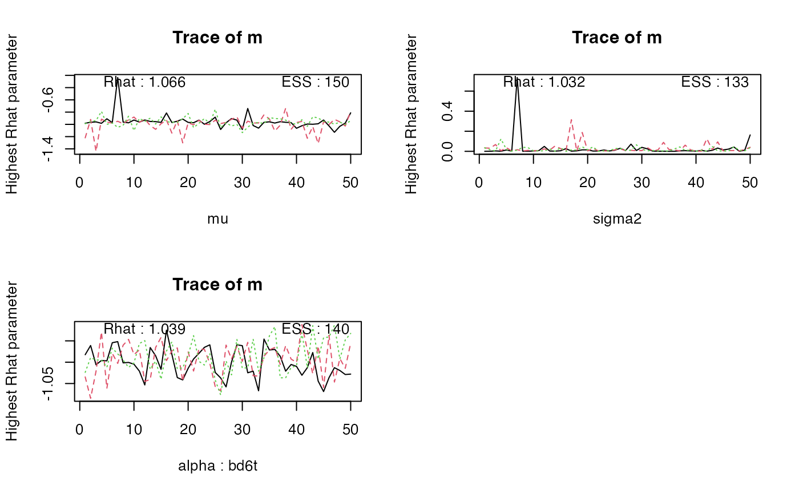

Runs a series of convergence checks, prints statistics to the console, and makes traceplots of the worst converged parameter per selection.
Usage
# S3 method for class 'emc'
check(
emc,
selection = c("mu", "sigma2", "alpha"),
digits = 3,
plot_worst = TRUE,
...
)
check(emc, ...)Arguments
- emc
An emc object
- selection
A Character vector. Indicates which parameter types to check (e.g.,
alpha,mu,sigma2,correlation).- digits
Integer. How many digits to round the ESS and Rhat to in the plots
- plot_worst
Boolean. If
TRUEalso plots the chain plots for the worst parameter- ...
Optional arguments that can be passed to
get_parsorplot.default(seepar())
Details
Note that the Rhat is calculated by doubling the number of chains by
first splitting chains into first and second half, so it also a test of
stationarity.
Efficiency of sampling is indicated by the effective
sample size (ESS) (from the coda R package).
Full range of possible samples manipulations described in get_pars.
Examples
check(samples_LNR)
#> Iterations:
#> preburn burn adapt sample
#> [1,] 0 0 0 50
#> [2,] 0 0 0 50
#> [3,] 0 0 0 50
#>
#> mu
#> m m_lMd s t0
#> Rhat 1.031 1.015 1.045 1.037
#> ESS 425.000 233.000 150.000 150.000
#>
#> sigma2
#> m m_lMd s t0
#> Rhat 1.255 1.044 1.036 1.067
#> ESS 46.000 150.000 150.000 130.000
#>
#> alpha highest Rhat : as1t
#> m m_lMd s t0
#> Rhat 1.14 1.046 1.087 1.106
#> ESS 57.00 116.000 69.000 53.000
